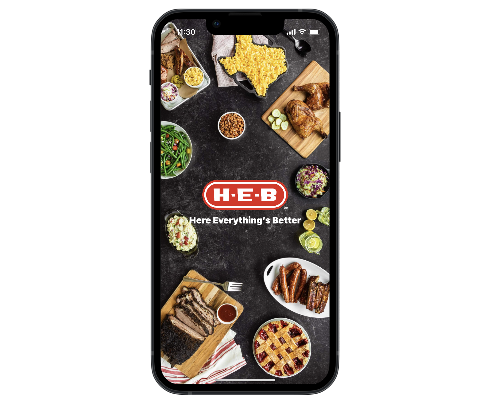
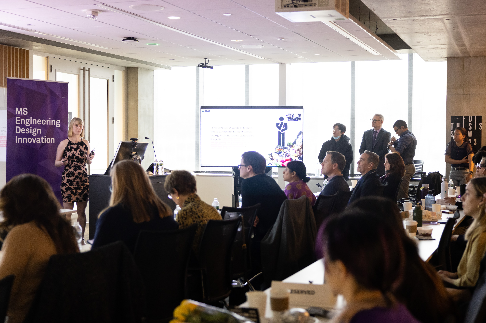

H-E-B DigitalDesign Researcher
Austin, TXJuly 2023 - present
Collaborate with design, product, and business stakeholders to uncover user needs that inform how we create world-class food and retail experiences for millions of Texans and the H-E-B Partners serving them
Northwestern UniversityMaster of Science in Design Innovation
Evanston, ILSep 2021 - Mar 2023
Northwestern's EDI program teaches human-centered design through a cross-functional approach — exposing students to real-world projects that span research, physical, digital, service, and design strategy.
PAX LabsCreative Technologist
San Francisco, CAJuly 2019 - May 2020
Era Pro is one of PAX's smart cannabis vapes that communicates through its colorfully animated 'petal' interface. At PAX, I helped capture and elevate their animation design system.
My role:
- Created a single source of truth for animations and UI behavior that could scale with design and firmware updates
- Built a prototyping tool that allowed product and engineering partners to quickly visualize and align on animation changes
- Designed content, copy and visual assets for the Era Pro user guide


AppleUser Studies Data Operations
Cupertino, CAOct 2017 - July 2019
Improved and automated data analysis, storage, and reporting processes for large-scale health and motion user studies
My role:
- Wrote data parsing and visualization scripts using Python
- Created standards and processes that improved data quality, automated work previously done manually
- Managed communications with external user studies coordinators
University of Central FloridaBachelor of Fine Arts in Sculpture
Specialized in interactive and computational sculpture